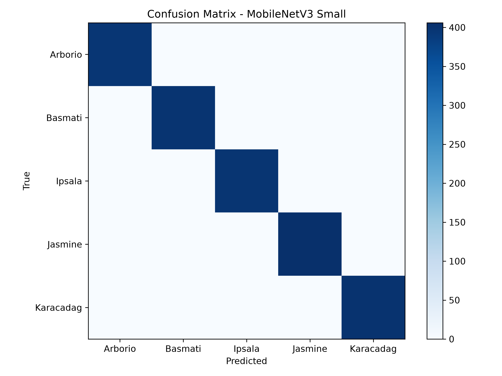

Dokumentasi hasil eksekusi notebook train_mobilenetV3.ipynb: transfer learning ringan pada lingkungan CPU dengan mekanisme watchdog anti-OOM dan evaluasi penuh terhadap 2.000 citra uji.
Pengendalian mutu industri pangan dan deteksi pemalsuan varietas beras menuntut verifikasi visual yang cepat, konsisten, dan dapat dijalankan tanpa infrastruktur GPU mahal.
Lima varietas komersial (Arborio, Basmati, Ipsala, Jasmine, Karacadag) memiliki perbedaan halus pada rasio panjang-lebar bulir, ketebalan, dan translusensi permukaan yang sulit dipisahkan secara manual pada volume besar.
Banyak skenario deployment di lapangan atau VPS hanya menyediakan CPU dengan jumlah thread terbatas, sehingga model konvolusi berat menghasilkan latensi tinggi dan konsumsi memori berlebih.
Proses training panjang pada dataset 10.000 citra rawan terhenti akibat kehabisan memori (OOM) tanpa pengaturan batch kecil, pemantauan RSS periodik, dan mekanisme resume checkpoint otomatis.
| No | Varietas | Karakteristik Morfologi Citra | Uji |
|---|---|---|---|
| 01 | Arborio | Bulir pendek-sedang, agak bulat, tebal, kadar amilosa tinggi (risotto Italia). | 396 |
| 02 | Basmati | Aromatik Asia Selatan; bulir sangat panjang, ramping, dan pipih. | 399 |
| 03 | Ipsala | Beras putih asal Thrace, Turki; bulir agak bulat dengan ukuran seragam. | 398 |
| 04 | Jasmine | Beras wangi Thai Hom Mali; bulir panjang, tekstur lembut, agak tembus cahaya. | 406 |
| 05 | Karacadag | Beras tradisional Turki; bulir bulat pendek tahan cuaca dataran tinggi. | 401 |
Memisahkan konvolusi spasial dan konvolusi titik (pointwise 1×1) untuk memangkas jumlah parameter serta operasi FLOPs secara drastis di CPU.
Ekspansi fitur berdimensi rendah ke tinggi lalu diproyeksikan kembali tanpa kehilangan informasi tekstur halus bulir beras.
Memberikan bobot adaptif pada kanal fitur yang paling diskriminatif, memperkuat pembedaan bentuk, panjang, dan kontur warna tiap varietas.
Mengganti fungsi Swish dengan aproksimasi ReLU6 piecewise-linear yang cepat di CPU. Bobot akhir best_mobilenetv3.pth hanya 6,22 MB.
Pelatihan berjalan deterministik dengan batasan thread CPU, batch berukuran kecil, penjadwalan learning rate adaptif, dan penghentian dini berbasis akurasi validasi.
Fungsi check_watchdog() memantau RSS proses via psutil dan ruang disk via shutil.
Otomatis berhenti aman jika sisa RAM < 200 MB atau disk kosong < 3,0 GB.
Menyimpan checkpoint_latest.pth (model, optimizer, scheduler) dan menjalankan gc.collect() setiap epoch.
Evaluasi ulang bobot best_mobilenetv3.pth pada keseluruhan validation split menghasilkan 0 false positive dan 0 false negative di seluruh 5 varietas beras.
Precision, Recall & F1 seragam sempurna di 5 kelas
~140 FPS di summary_metrics.csv (10,50 ms saat run Cell 4)
Sangat hemat memori, aman di VPS RAM terbatas
~1 jam 24 menit total hingga early stop Epoch 14
| Aktual \ Prediksi | Arborio | Basmati | Ipsala | Jasmine | Karacadag |
|---|---|---|---|---|---|
| Arborio | 396 | 0 | 0 | 0 | 0 |
| Basmati | 0 | 399 | 0 | 0 | 0 |
| Ipsala | 0 | 0 | 398 | 0 | 0 |
| Jasmine | 0 | 0 | 0 | 406 | 0 |
| Karacadag | 0 | 0 | 0 | 0 | 401 |
Seluruh bobot model terlatih, log progres training, matriks evaluasi CSV, hingga gambar resolusi tinggi terdokumentasi rapi di direktori runs/mobilenetv3_cpu/.
MobileNetV3-Small mencapai akurasi 100,00%, Macro Precision 1,00, Recall 1,00, dan F1-Score 1,00 di seluruh 2.000 citra validasi.
Dengan ukuran bobot hanya 6,22 MB dan kecepatan inferensi ~7,14 ms/citra (~140 FPS di CPU), model ideal untuk integrasi FastAPI, Flask, maupun perangkat edge.
Watchdog RAM/disk, batch size 8, dan early stopping di epoch 14 menjaga penggunaan memori puncak tetap terkendali di 652,9 MB dengan hasil sepenuhnya reproducible.
